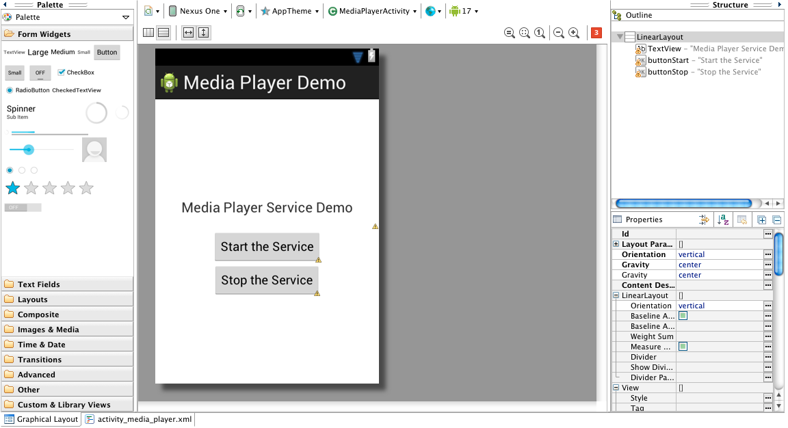
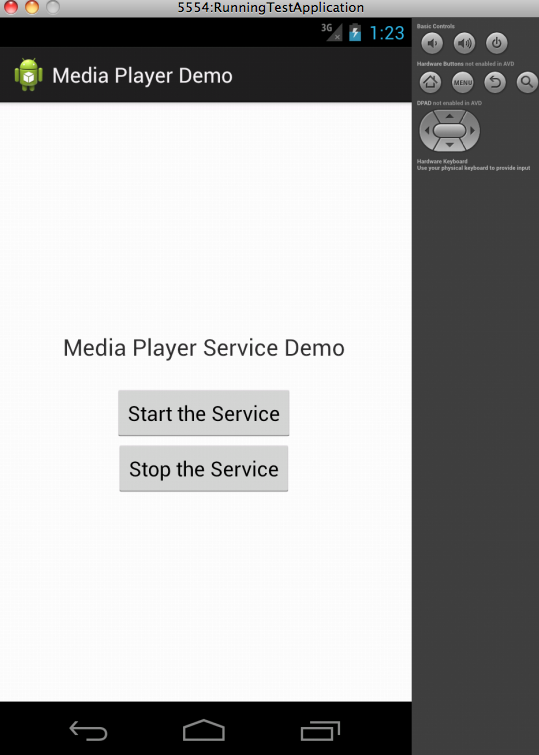

Lab 3 - CSE 110
Lab 3: Google Android Basics
Welcome to Android development! In this lab we will explore the basics of Android, creating the canonical "Hello World" app in addition to making a simple apps. We then conclude the lab with some reading material for making your basics stronger.
Please follow these guidelines:
-
Work with one other partner on a single computer
-
There are questions throughout this lab that need to be answered for checkoff.
-
Both partners need a working copy of the code repository for this lab.
- Make sure to check all projects into your repository!
-
Note: Please make sure you run
prep cs110wbefore beginning the lab, forgetting to in this lab is likely to cause you a lot of headaches.
Android Overview
-
Android is a software stack for mobile devices that includes an operating system, middleware and key applications. Google Inc. purchased the initial developer of the software, Android Inc., in 2005. Android's mobile operating system is based on the Linux kernel. Google and other members of the Open Handset Alliance collaborated on Android's development and release. The Android Open Source Project (AOSP) is tasked with the maintenance and further development of Android. The Android operating system is the world's best-selling Smartphone platform.
-
Android has a large community of developers writing applications ("apps") that extend the functionality of the devices. There are currently exactly 1,096,716 apps available for Android (as opposed to 150,000 one year ago when this lab was first prepared). Android Market is the online app store run by Google, though apps can also be downloaded from third-party sites. Developers write primarily in the Java language , controlling the device via Google-developed Java libraries.
-
The Android open-source software stack consists of Java applications running on a Java-based, object-oriented application framework on top of Java core libraries running on a Dalvik virtual machine featuring JIT compilation. Libraries written in C include the surface manager, OpenCore media framework, SQLite relational database management system, OpenGL ES 2.0 3D graphics API, WebKit layout engine, SGL graphics engine, SSL, and Bionic libc. The Android operating system, including the Linux kernel, consists of roughly 12 million lines of code including 3 million lines of XML, 2.8 million lines of C, 2.1 million lines of Java, and 1.75 million lines of C++.
Create a Repository for this Lab
With all software engineering, version control is essential. In addition to bug tracking and versioning, creating a repository is also a great way to distribute code to multiple programmers.
Create a SINGLE repository on one of your accounts
- The name is your choice
Make sure to check each project you create in this lab into this repository!
- Hello World
- Music Service Demo
Hello (Android) World
We will be developing Android in the Eclipse programming environment, using the ADT Plugin:
-
Android Development Tools (ADT) is a plugin for the Eclipse IDE that is designed to give you a powerful, integrated environment in which to build Android applications.
-
ADT extends the capabilities of Eclipse to let you quickly set up new Android projects, create an application UI, add components based on the Android Framework API, debug your applications using the Android SDK tools, and even export signed (or unsigned) .apk files in order to distribute your application.
-
Developing in Eclipse with ADT is highly recommended and is the fastest way to get started. With the guided project setup it provides, as well as tools integration, custom XML editors, and debug ouput pane, ADT gives you an incredible boost in developing Android applications.
Begin the coding portion of this lab by following the instructions given at the link below.
This is an official tutorial from Google which covers:
- Creating an Android emulator.
- Creating an Android project in Eclipse.
- Running your Android project in your Android emulator.
Note that you should skip the
Install a Platform
step if you are on a lab machine (this has been done for you already). Also, you can skip any of the parts that reference the command line, though you are encouraged to read over it for your own personal benefit, it will not be required for this lab. You may also skip the section explaining how to use your own physical Android device (rather thn the emulator), unless of course you have an Android phone and would like to know how to do this.
In short you can skip following section:
Create a Project with Command Line Tools
Run on a Real Device
If you get a mmap() error when creating the emulator, set the RAM of the device to 512. Note the buttons with icons as shown below, they are Android SDK Manager and Android Virtual Device Manager, respectively, as mentioned in the tutorial.
Also, please use Android version 4.1 (Jelly Bean, API level 16) for the emulator and project during the tutorial. Also make sure Android version 2.2 (Froyo, API level 8) is selected for min sdk version when creating your projects.
Hello World Tutorial
If you follow the steps in this offical Hello World tutorial, your final Hello World app should look like this (make sure you have read all the stuff mentioned in the this tutorial.) The background can be white instead of black.

Now that you've completed the Hello World tutorial, answer the following questions:
- What open source license is used in the Android Open Source Project? (Hint: It is not the same license that is used in the Linux kernel.)
-
In your project, you should find a file named
R.javainside thegendirectory. What is this class, and what does it contain? - The graphical user interface for an Android app is built using a hierarchy of what Objects?
Activities in Android
An Activity is an application component that provides a screen with which
users can interact in order to do something, such as dial the phone, take a photo, send an email, or
view a map. Each activity is given a window in which to draw its user interface.
To create an activity, you must create a subclass of Activity . In your subclass, you need to implement callback methods that the
system calls when the activity transitions between various states of its lifecycle, such as when
the activity is being created, stopped, resumed, or destroyed.
Go back to your hello world app. and figure out which class is a subclass of Activity and which methods are overridden by that class.
Managing the Activity Lifecycle
As a user navigates through, out of, and back to your app, the Activity instances in your app transition between different states in their lifecycle. For instance, when your activity starts for the first time, it comes to the foreground of the system and receives user focus. During this process, the Android system calls a series of lifecycle methods on the activity in which you set up the user interface and other components. If the user performs an action that starts another activity or switches to another app, the system calls another set of lifecycle methods on your activity as it moves into the background (where the activity is no longer visible, but the instance and its state remains intact).
To understand the activity's lifecycle see the below diagram:

- Starting an Activity
- Learn the basics about the activity lifecycle, how the user can launch your app, and how to perform basic activity creation.
- Pausing and Resuming an Activity
- Learn what happens when your activity is paused (partially obscured) and resumed and what you should do during these state changes.
- Stopping and Restarting an Activity
- Learn what happens when the user completely leaves your activity and returns to it.
- Recreating an Activity
- Learn what happens when your activity is destroyed and how you can rebuild the activity state when necessary.
Music Service Demo App
In this section, you will create a media player that players a sample music at backgroud, when started. To create a application to run in the background of other current activities, one needs to create a Service. The Service can run indefinitely (unbounded) or can run at the lifespan of the calling activity(bounded).
From the Android documentation: "A Service is an application component that can perform long-running operations in the background and does not provide a user interface. Another application component can start a service and it will continue to run in the background even if the user switches to another application. A service might handle network transactions, play music, perform file I/O, or interact with a content provider, all from the background." This
statement contains the answer to the question "Why do we need Services? Can't we just create Activities and work with them?".
However, think of a task that is to be completed only once, but takes too long to finish to be handled in the main UI thread. The reason that long processes like downloading an image or accessing a database cannot be executed in the main UI thread
is that it would cause the program to be unresponsive. This would lead to the user thinking the program is hanging, since the UI thread cannot register anything the user is doing (pressing different buttons, etc) as it is too busy doing the other thing. We all know (as users ourselves) that no one has the patience for an application that hangs. Thus, the long task can be run in the background by using an AsyncTask, which is much more light-weight than a service. Think of the whole concept as multitasking. The class AsyncTask provides
methods like onPreExecute(), doInBackground() and onPostExecute() to control the flow of the program. Now we will do an exercise to learn more about services.
Please note that a Service has a different lifecycle than activities therefore have different methods. But to begin a service in the application a call to startService() which envokes the service onCreate() method and onStart() beginning running the service.
context.startService() | ->onCreate() - >onStartCommand() [service running]
Calling the applications stopService() method to stop the service.
context.stopService() | ->onDestroy() [service stops]
Something that we didn't use in this example is bindService() which just calls the services onCreate() method but does not call the onStartCommand(). onBindService() is used to create persistance connection to the service.
context.onBindService() | ->onCreate() [service created]
This Services Demo is simple as it plays a audio file and by listening to click events of the buttons invokes the MyService service.
As done in Hello World, create a new project with Application Name as "Media Player Demo", Project Name as "MediaPlayerDemo", package name as com.example.mediaplayerdemo. Make sure your minimum required SDK is API 8 (2.2, Froyo), Target SDK is API 16, and Compile with API 4.2. Leave the theme as default and click Next. You need to leave all config items as default, then Next, until you reach the last page where you are asked to give names to the Activity and Layout. The Activity Name is "MediaPlayerActivity" and the Layout Name is "activity_media_player".
You now have a standard Android project. Now look at MediaPlayerActivity class: it has already the onCreate() and onCreateOptionsMenu() methods. For this section you don't need the onCreateOptionsMenu() methods so you can delete it now. Copy and paste the following code into your MediaPlayerActivity.java
package com.example.mediaplayerdemo;
import android.os.Bundle;
import android.app.Activity;
import android.widget.Button;
public class MediaPlayerActivity extends Activity {
Button buttonStart, buttonStop;
@Override
public void onCreate(Bundle savedInstanceState) {
super.onCreate(savedInstanceState);
setContentView(R.layout.activity_media_player);
}
}Up until now you don't have a service yet - all you have is the demo page (activity). The Button objects are introduced because we want to create two buttons later to start and stop the service. Inside the onCreate() method, you set the activity_media_player as the root view. Now let's modify the activity_media_player.xml file to make the UI structure more clear. Open the xml file and copy the following code and paste it into the file.
<LinearLayout xmlns:android="http://schemas.android.com/apk/res/android"
xmlns:tools="http://schemas.android.com/tools"
android:orientation="vertical"
android:layout_width="fill_parent"
android:layout_height="fill_parent"
android:gravity="center" >
<TextView
android:layout_width="fill_parent"
android:layout_height="wrap_content"
android:text="Media Player Service Demo"
android:gravity="center"
android:textSize="20sp"
android:padding="20dp"/>
<Button android:id="@+id/buttonStart"
android:layout_width="wrap_content"
android:layout_height="wrap_content"
android:text="Start the Service" />
<Button android:id="@+id/buttonStop"
android:layout_width="wrap_content"
android:layout_height="wrap_content"
android:text="Stop the Service" />
</LinearLayout>
If you click the "Graphical Layout" tab under the xml file, you can quickly review your UI design. It should be like the following. If the graphical layout is not showing anything and instead telling you to update ADT, just run the project on the emulator and it should show correctly.

Note that you created id's for the two buttons in activity_media_player.xml, so you can reference it in your java file. Go back to the MediaPlayerActivity class, copy and paste the following code.
package com.example.mediaplayerdemo;
import android.os.Bundle;
import android.app.Activity;
import android.content.Intent;
import android.view.Menu;
import android.view.View;
import android.view.View.OnClickListener;
import android.widget.Button;
public class MediaPlayerActivity extends Activity implements OnClickListener{
Button buttonStart, buttonStop;
@Override
public void onCreate(Bundle savedInstanceState) {
super.onCreate(savedInstanceState);
setContentView(R.layout.activity_media_player);
buttonStart = (Button) findViewById(R.id.buttonStart);
buttonStop = (Button) findViewById(R.id.buttonStop);
buttonStart.setOnClickListener(this);
buttonStop.setOnClickListener(this);
}
public void onClick(View src) {
switch (src.getId()) {
case R.id.buttonStart:
startService(new Intent(this, MediaService.class));
break;
case R.id.buttonStop:
stopService(new Intent(this, MediaService.class));
break;
}
}
}The two buttons are now set up to be the one you created in the activity_media_player.xml file. Notice that the class now implements the OnClickListener interface, so that the two buttons can await for the click event. The onClick() must be implemented as it is defined in the OnClickListener interface, and it will be triggered by the click event. You will find there are two errors because we haven't yet defined the "MediaService" class, which will be the service you are going to demo.
Before that you need a music file to play. First, go to the "res" folder, and under it create a new folder called "raw"; then download this music file (right click it and save it to your disc) and put it inside of the "raw" folder. Now "Refresh" the whole project.
You are ready to create a service class for playing the music. In the com.example.mediaplayerdemo package, create a new class called "MediaService". Copy and paste the following code:
package com.example.mediaplayerdemo;
import android.app.Service;
import android.content.Intent;
import android.media.MediaPlayer;
import android.os.IBinder;
import android.widget.Toast;
public class MediaService extends Service {
MediaPlayer player;
@Override
public IBinder onBind(Intent intent) {
return null;
}
@Override
public void onCreate() {
Toast.makeText(this, "My Service Created", Toast.LENGTH_LONG).show();
player = MediaPlayer.create(this, R.raw.test_music);
player.setLooping(true);
}
@Override
public void onDestroy() {
Toast.makeText(this, "My Service Stopped", Toast.LENGTH_LONG).show();
player.stop();
}
@Override
public void onStart(Intent intent, int startid) {
Toast.makeText(this, "My Service Started", Toast.LENGTH_LONG).show();
player.start();
}
}
In this class, the onCreate(), onStart(), and onDestroy() methods are implemented to provide media player service. However you still need to tell AndroidManifest.xml to include the service in your app. Open the xml file, and add the following snippet immediately after the <activity>...</activity> block, but within the <application>...</application> block.
<service android:enabled="true" android:name=".MediaService" />Alright, you are good to run it. Run your app on the virtual device.

Now answer the following questions:
- What is the song that your app is playing?
- In what order are the three methods (onCreate(), onDestroy(), onStart()) in the defined service executed? (You should be able to tell at runtime, by observing the notifications (Toast).)
-
What happens to the activity when you rotate your screen i.e change orientation (say from portrait to landscape). In other words, what are the sequence of events for activity (onCreate(), onStart(), onResume(), onPause(), onStop() etc) when you rotate your screen?
(Hint: you can simulate screen rotation in emulator by doing LEFT_CTRL+F12, You can also override these methods in the MediaPlayerActivity class).
Also please use debug messages in these functions(using Log.d()) and see corresponding logcat messages in eclipse. - Why do we need to use services and AsyncTasks when programming for Android?
To be checked off, we are looking for:
- Hello World app.
- Media Player Demo app.
- A file containing all the questions and answers.
Optional
Extended lab3 resource is here. It is NOT required to complete the task mentioned in this part, but we highly recommend to complete it in this lab. You may need to know this part for your project.